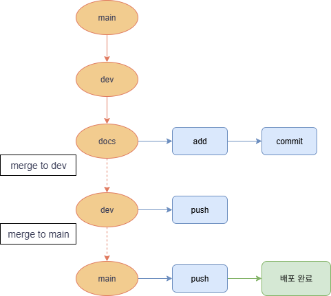

Git branch & workflow
개요
Git은 버전 관리를 위한 분산 시스템으로, 다양한 브랜치 전략과 협업
흐름을 통해 안정적인 프로젝트 관리를 가능하게 합니다.
Git을
활용한 프로젝트 버전 관리를 위해 main, dev, docs 브랜치로 나눠
전략적으로 작업을 진행했습니다.
주요 내용
- main: 실제 서비스로 배포되는 안정된 버전
- dev: 개발 중인 기능들을 통합하는 브랜치
- docs/브랜치: 개별 기능 개발을 위한 작업 브랜치
- merge로 작업 브랜치 ➝ dev ➝ main 순 병합
브랜치 구조
예제 코드
git checkout main
git pull origin main # 혹시 모를 원격 main의 변경사항을 가져옴
git branch dev # 로컬에 dev 브랜치 생성
git push origin dev # dev 브랜치를 원격에 푸시
git checkout dev
git pull origin dev # 항상 dev 브랜치를 최신으로 유지
git checkout -b docs/git-branch-workflow # 새로운 작업 브랜치 생성
# ... 작업, add, commit ...
git checkout dev
git pull origin dev # 병합 전 dev 최신화
git merge docs/git-branch-workflow
git push origin dev
git branch -d docs/git-branch-workflow
git push origin --delete docs/git-branch-workflow # 원격 작업 브랜치 삭제
git fetch --prune origin # 로컬 추적 브랜치 정리
git checkout main
git pull origin main # 혹시 main에 다른 변경사항이 있었다면 가져옴
git merge dev # dev 브랜치 내용을 main에 병합
git push origin main # main 브랜치를 원격에 푸시 (배포)
사용한 명령어
- checkout -b: 새 브랜치 생성 후 전환
- merge: 하나의 브랜치를 현재 브랜치와 병합
- pull: 원격 저장소의 변경사항을 로컬 저장소로 가져와서 병합
주로 사용하는 명령어
- reset: 브랜치의 히스토리를 이전 상태로 되돌리는 명령어. 특정 커밋으로 되돌리고 이후 커밋 이력을 재설정
- stash: 다른 브랜치로 체크아웃하기 전에 현재 작업내용을 저장하는 임시 저장소. 언제든지 복구 가능
- rebase: 커밋 이력을 재작성 하는 강력한 명령어. 특정 브랜치의 커밋들을 다른 브랜치의 최신 커밋 위에 다시 쌓는 작업을 수행. 선형적이고 깔끔한 커밋 이력을 만들기 위함
나의 생각 및 응용
처음에는 Git의 브랜치 흐름이 어려웠지만 단순히 add, commit, push만
사용하는 게 아니라 브랜치를 나눠서 관리하니 훨씬 깔끔하고 유지보수가
쉬웠습니다.
브랜치를 병합할 때 순서를 명확히 하는게 중요했고 이런 구조가
프로젝트 관리에 큰 도움이 됐습니다.
앞으로는 겁먹지 않고 reset, stash, rebase 같은 정리된 관리 방식도 적극 사용할 계획입니다.
기술 적용 사례
이 Git 전략은 실제 포트폴리오에 적용해 깔끔한 브랜치 흐름과 커밋 관리를 경험했습니다.